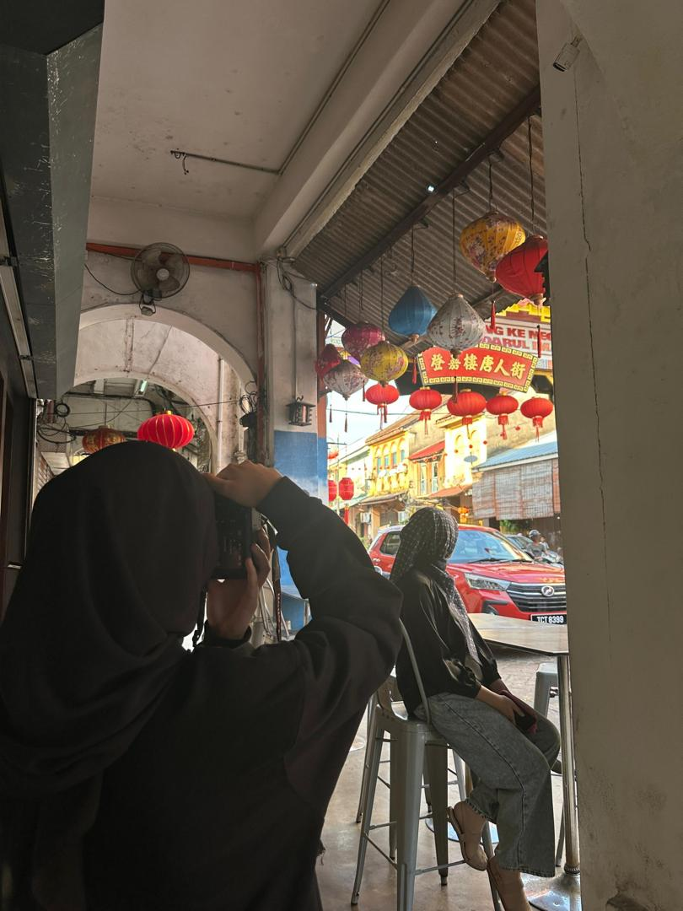
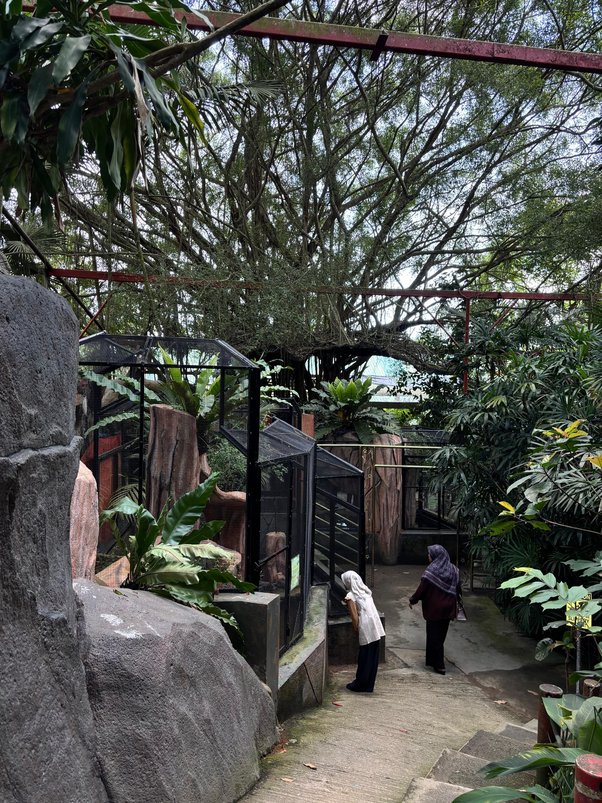
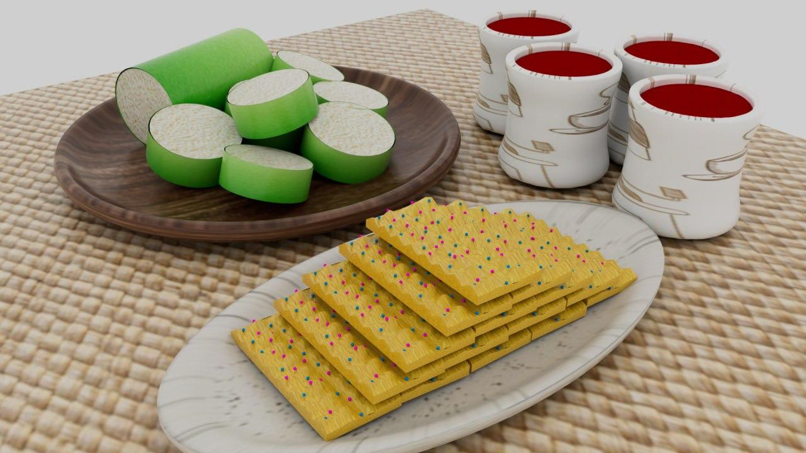

Information Technology Student
Universiti Sultan Zainal Abidin (UniSZA)
Hi! My name is Nisa, and one of my favourite hobbies is photography. I enjoy taking photos of beautiful scenery, special moments, and everyday life. Through photography, I can express my creativity and turn simple moments into lasting memories.

Besides travelling, I enjoy food hunting, visiting new places, and spending time by the beach. These activities bring me joy and inspire me to explore more of the world around me.

I enjoy learning web development, 3D modelling, and animation through hands-on projects. These experiences help me develop both my technical knowledge and creativity while preparing for future opportunities in the technology industry.
